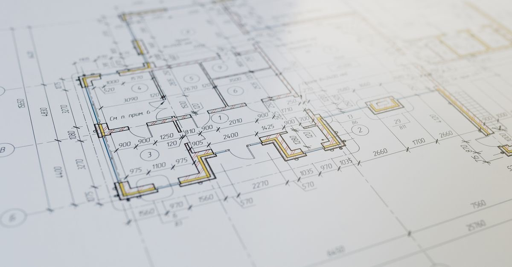

Bina yıkıldıktan sonra mülkiyet ne oluyor? Kat mülkiyeti, arsa payı ve yeniden inşa
Ana yapı tamamen yıkılırsa kat mülkiyeti sona erer; geriye arsa payı oranında paylı mülkiyet kalır. Yeni dairenizin büyüklüğünü bu oran belirler.

Yıkılan binanın enkazı kaldırıldığında ortada çıplak bir arsa kalır. O anda çoğu kişinin aklından geçen soru şudur: "Benim dairem yok oldu, tapum ne oldu?" Cevap net: mülkiyetiniz yok olmaz, biçim değiştirir.
Kat mülkiyeti sona erer, paylı mülkiyet kalır
Ana yapı tamamen yıkılır veya harap olursa kat mülkiyeti sona erer; geriye arsa payı oranında paylı mülkiyet kalır.
Bina yıkılıp arsa çıplak kaldığında, kurulmuş kat irtifakı veya kat mülkiyeti ilgili tapu müdürlüğünce tarafların rızası aranmaksızın terkin edilir ve taşınmaz, malikler adına payları oranında tescil edilir.
Yani artık "3. kattaki 6 numaralı daire"nin sahibi değil, arsanın belirli bir payının sahibisiniz. Yeniden inşa süreci de bu pay üzerinden yürür.
Arsa payı neden bu kadar kritik?
Çünkü yeni binada size ne verileceğini bu oran belirler:
- Alacağınız bağımsız bölümün metrekaresi
- Hangi kat ve hangi cephe
- Kaç bağımsız bölüm alacağınız
- Müteahhitle yapılacak paylaşımda payınız
- Kentsel dönüşüm karar süreçlerinde oy ağırlığınız
Arsa payı yanlışsa, yeni binada kalıcı hak kaybı yaşarsınız. Üstelik bu kayıp, bina yapıldıktan sonra düzeltilemez hâle gelir. Yeniden inşa sürecine girmeden önce tapu kaydınızdaki arsa payını mutlaka kontrol edin.
Arsa payı nasıl belirlenmiş olmalı?
Arsa payları, bağımsız bölümlerin değerleriyle orantılı olarak dağıtılmalıdır. Uygulamada ise çoğu binada paylar özensiz belirlenmiş, bazen tüm dairelere eşit pay verilmiş, bazen zemin kat dükkânlara gerçek değerinin çok altında pay yazılmıştır.
Değerlendirme, kat mülkiyeti veya kat irtifakının kurulduğu tarihteki değerlere göre yapılır.
Arsa payının düzeltilmesi davası
Arsa payları bağımsız bölümlerin değerleriyle orantılı dağıtılmamışsa, her kat maliki veya intifa hakkı sahibi arsa paylarının yeniden belirlenmesi için dava açabilir.
Bu dava genellikle şu durumlarda gündeme gelir:
- Zemin kattaki dükkâna, değerine göre çok düşük pay verilmiş olması
- Aynı büyüklükteki dairelere farklı paylar yazılmış olması
- Çatı katı veya bodrum bağımsız bölümlerinin payının hatalı olması
Dava teknik bilirkişi incelemesi gerektirir ve zaman alır; yeniden inşa kararı alınmadan önce açılması, sonradan doğacak uyuşmazlıkları önler.
Yeniden inşa süreci: kararlar nasıl alınır?
- Malikler tespit edilir. Vefat edenlerin yerine mirasçıları geçer; bu yüzden miras işlemlerinin tamamlanması süreci hızlandırır.
- Arsa payları kontrol edilir. Hatalıysa düzeltme davası gündeme gelir.
- Karar alınır. Kentsel dönüşüm mevzuatı kapsamındaki süreçlerde kararlar, arsa payı çoğunluğuna göre alınır; katılmayanlar için ayrı bir usul işletilir.
- Sözleşme yapılır. Müteahhitle yapılan kat karşılığı inşaat sözleşmesi mutlaka avukat gözetiminde hazırlanmalıdır.
Kiracılar bu masada yok. Karar süreçlerinde oy ağırlığı arsa payına bağlı olduğu için kiracının oyu yoktur; buna karşılık sonuçlarına katlanır. Kiracının hakları ayrı bir yazının konusu.
Bugün kontrol edilecekler
- Tapu kaydınızı alın (e-Devlet üzerinden mümkündür) ve arsa payınızı not edin.
- Binadaki toplam bağımsız bölüm sayısını ve payların toplamını karşılaştırın.
- Kat irtifakı/kat mülkiyeti kuruluş tarihini ve o tarihteki proje bilgilerini öğrenin.
- Yönetim planı ve varsa eski bilirkişi raporlarını saklayın.
- Hasar tespitine itiraz süreciniz sürüyorsa, iki süreci birlikte yürütün — itiraz süresi 30 gündür.
Yıkılan bina için vergi ödemeye devam etmeyin
Yıkılan veya kullanılamaz hâle gelen binalarda emlak vergisi mükellefiyetinin sona ermesi, çoğu zaman bildirime bağlıdır. Bildirim yapılmazsa tahakkuk devam eder ve yıkılmış bir bina için yıllarca vergi ödeyen çok sayıda kişi vardır.
Deprem sonrası vergi yükümlülükleri yazısında ayrıntılı anlatılıyor.
Kat karşılığı inşaat sözleşmesinde dikkat edilecekler
Yeniden inşa çoğu zaman bir müteahhitle yapılan kat karşılığı inşaat sözleşmesiyle yürür. Bu sözleşme, arsa payınızın yeni binada neye dönüşeceğini belirlediği için hayatınızın en önemli sözleşmelerinden biridir.
- Hangi bağımsız bölümün kime verileceği kat, cephe ve metrekare olarak açıkça yazılmalı; "eşdeğer daire" gibi belirsiz ifadelerden kaçınılmalıdır.
- Teslim süresi ve gecikme yaptırımı belirlenmelidir.
- Yapının hangi yönetmeliğe göre inşa edileceği ve denetim süreci yazılmalıdır.
- Kira yardımı veya geçici barınma yükümlülüğü varsa sözleşmeye girmelidir.
- Tapu devirlerinin hangi aşamada yapılacağı netleştirilmelidir.
Bu sözleşmeyi mutlaka bir avukat gözetiminde imzalayın. Hazır matbu metinler, arsa sahibinin aleyhine düzenlenmiş olabilir ve imzalandıktan sonra düzeltilmesi çok zordur. Ücret ödeyemiyorsanız barosunun adli yardım birimine başvurabilirsiniz.
Depremden önce yapılabilecek tek şey
Arsa payı sorunları hep deprem sonrasında konuşuluyor; oysa düzeltilmesi en kolay olduğu zaman bugün. Tapu kaydınızı alın, arsa payınızı kontrol edin ve bariz bir orantısızlık varsa hukuki değerlendirme yaptırın. Bina ayaktayken çözülen bir mesele, yıkıldıktan sonra hak kaybına dönüşmez.
Kanuni dayanak
| Mevzuat | Ne diyor |
|---|---|
| 634 sayılı Kat Mülkiyeti Kanunu m.47 | Ana yapının harap olması |
| 634 sayılı Kat Mülkiyeti Kanunu m.3 ve m.44 | Arsa payı ve yeniden inşa |
| 6306 sayılı Kanun | Riskli yapı ve kentsel dönüşüm karar süreçleri |
Sık sorulanlar
Bina yıkılınca tapum geçersiz mi olur?
Hayır, mülkiyetiniz yok olmaz. Ana yapı tamamen yıkılır veya harap olursa kat mülkiyeti sona erer ve geriye arsa payı oranında paylı mülkiyet kalır; taşınmaz malikler adına payları oranında tescil edilir.
Arsa payı neden bu kadar önemli?
Yeniden inşada her malikin alacağı bağımsız bölümün büyüklüğü, katı ve cephesi arsa payına göre belirlenir. Ayrıca kentsel dönüşüm karar süreçlerinde arsa payı oy ağırlığını belirler.
Arsa payım yanlışsa ne yapabilirim?
Arsa payları bağımsız bölümlerin değerleriyle orantılı dağıtılmamışsa, her kat maliki veya intifa hakkı sahibi arsa paylarının yeniden belirlenmesi için dava açabilir.
Arsa payı hangi tarihteki değere göre hesaplanır?
Değerlendirmenin, kat mülkiyeti veya kat irtifakının kurulduğu tarihteki değerlere göre yapıldığı belirtilmektedir. Bugünkü piyasa değeri tek başına ölçüt değildir.
Bu konuyla ilgili araç
Hak taramaMalik olarak hangi haklara sahipsiniz?.Süre takvimiItiraz ve başvuru sürelerinizi takip edin.İlgili rehberler
 Devlet destekleri
Hak sahipliği başvurusu: iki aylık süre, taahhütname ve faizsiz borçlandırma
Binası yıkılan veya ağır hasarlı malikler devletten konut ya da faizsiz kredi isteyebilir. Başvuru süresi ilan tarihinden itibaren iki aydır.
Devlet destekleri
Hak sahipliği başvurusu: iki aylık süre, taahhütname ve faizsiz borçlandırma
Binası yıkılan veya ağır hasarlı malikler devletten konut ya da faizsiz kredi isteyebilir. Başvuru süresi ilan tarihinden itibaren iki aydır.
 Deprem öncesi yapı güvenliği
Riskli yapı tespiti nasıl yaptırılır? Komşularınızın onayı gerekmiyor
Riskli yapı tespiti için diğer maliklerin onayı gerekmez. Tek bir kat maliki, masrafı kendisine ait olmak üzere tüm binanın tespitini yaptırabilir.
Deprem öncesi yapı güvenliği
Riskli yapı tespiti nasıl yaptırılır? Komşularınızın onayı gerekmiyor
Riskli yapı tespiti için diğer maliklerin onayı gerekmez. Tek bir kat maliki, masrafı kendisine ait olmak üzere tüm binanın tespitini yaptırabilir.
 Yakınını kaybedenler
Cenaze bulunamadıysa ölüm nüfusa nasıl işlenir? Ölüm karinesi, gaiplik ve miras
Enkazda kaybolan kişi, cesedi bulunamasa bile ölmüş sayılabilir. Bu, mahkeme kararı gerektirmez ve mirası hemen açar. Gaiplikten farkı budur.
Yakınını kaybedenler
Cenaze bulunamadıysa ölüm nüfusa nasıl işlenir? Ölüm karinesi, gaiplik ve miras
Enkazda kaybolan kişi, cesedi bulunamasa bile ölmüş sayılabilir. Bu, mahkeme kararı gerektirmez ve mirası hemen açar. Gaiplikten farkı budur.
 Dava ve uyuşmazlık
Müteahhidin sorumluluğu: ağır kusur varsa zamanaşımı 20 yıl
Binanın depremde yıkılması hukuken ayıplı ifadır. Taşınmaz yapılarda zamanaşımı beş yıl, yüklenicinin ağır kusuru varsa yirmi yıldır.
Dava ve uyuşmazlık
Müteahhidin sorumluluğu: ağır kusur varsa zamanaşımı 20 yıl
Binanın depremde yıkılması hukuken ayıplı ifadır. Taşınmaz yapılarda zamanaşımı beş yıl, yüklenicinin ağır kusuru varsa yirmi yıldır.